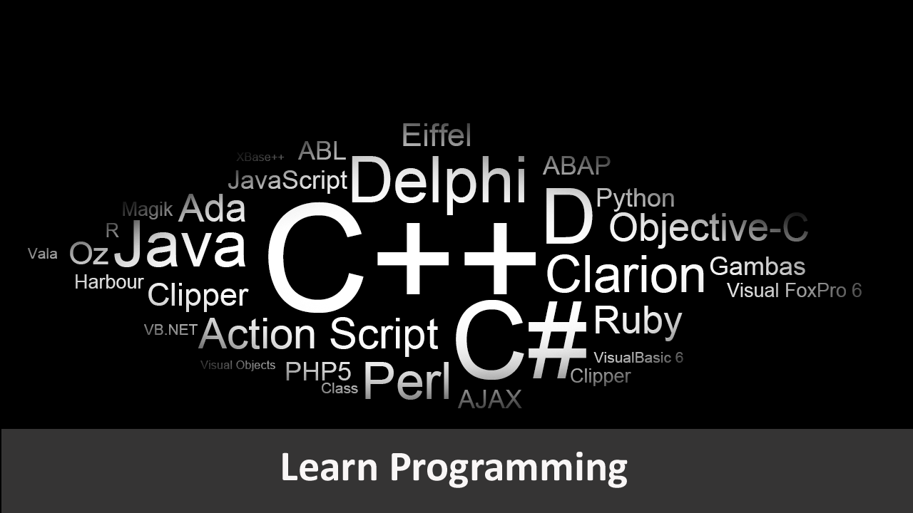

Department of Computer Science
What Is Computer Science
Computer Science is the study of the computers and computational systems.Computer Scientists deal mostly with software and software systems,including areas of Artificial Intelligence,networks,Security,Database, Graphics,numerical analysis, programming languages and Theory of Computing.
Why Study Computer Science
The most important aspect of computer science is problem solving, an essential skill for life. Students study the design, development and analysis of software and hardware used to solve problems in a variety of business, scientific and social contexts. Because computers solve problems to serve people, there is a significant human side to computer science as well.